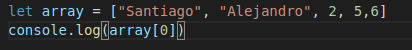
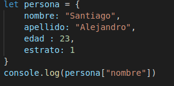

Arrays: Conjunto de elementos que estan dentro de un objeto, el elemento 1 del array tiene la posición 0, el elemento 2 tiene la posicion 1
Array Asociativo: Es lo mismo que un array con la diferencia de que, se le acciona un key y un valor a cada elemento, es decir, la posicion de los elementos ya no esta definida por numero si no por llaves o o keys que nosotros mismos asignamos.

Bucles: Ciclos repetitivos que se repiten constantemente de acuerdo a una condición.
Tipos de Bucles
Resultado de variable: 5
Resultador de variable: 10
Resultado de la variable: 14
Sentencias importantes en los bucles:
Primero que todo el ciclo for esta funcionando de manera descendente y el valor de la variable termina con: 5. Esto sucede ya que le estamo dando un continue a y que no cuente los valores en los que la variable3 es par. es decir, colo cuenta los numeros importantes que hay desde 10 a 0 = 5
En el siguiente ejemplo observamos que sobre el primer for hay un valor "forInicial:" es el nombre que se le asigno a dicho for esto con el objetivo de que cuando el recorrido de los bucles se encuentre en el segundo for y dentro de este se encuentra el valor de "alejandro" se rompa el bucle mayor por esta razon solo se imprimen en consola los nombres de "kevin, mateo, santiago". Si lo ubiesemos colocado el break; se saldria del primer bucle pero no del segundo, por lo que tendriamos un resultado diferente que seria: "kevin, mateo, santiago, yamis"